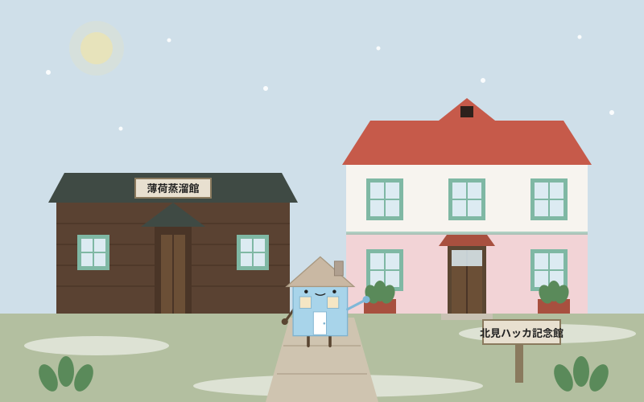
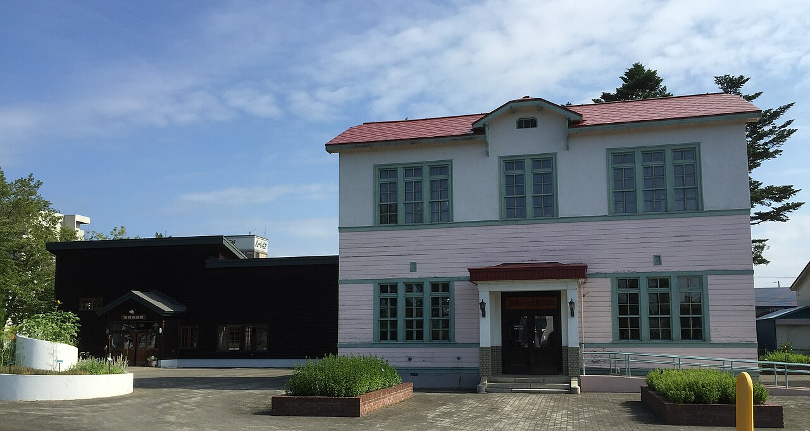
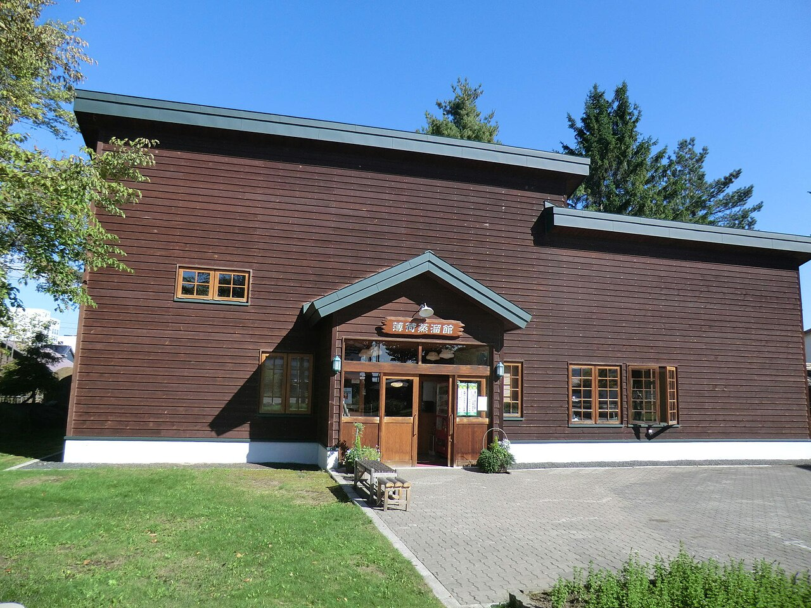

Day 27：北見市

ガラス瓶の中で、針のような結晶が光っていた。北見ハッカ記念館の展示室。ハッカ脳と呼ばれる結晶は、和種ハッカからしか採れないという。瓶の蓋を開けなくても、すっとした香りが鼻の奥に届く気がした。冬の北見は、もう匂いのない季節だった。畑は雪の下で、街の空気は冷たく澄んでいるだけだった。なのにこの小さな瓶の中にだけ、かつて街じゅうに満ちていた香りが閉じ込められている。私は思わず、瓶に顔を近づけていた。
網走駅を9時43分に出た。快速「きたみ」で石北本線を西へ、59分で北見駅に着いた。車窓はオホーツクの平野で、刈り取られたあとの畑が雪をかぶり始めていた。北見駅から歩いて約10分、南仲町に、淡いピンクの二階建ての建物があった。赤い屋根に、薄荷色の窓枠。隣には、焦げ茶色の木の壁の薄荷蒸溜館が並んでいる。

北見のハッカ栽培は、1896年に山形県から持ち込まれた種根から始まったという。ハッカから採れる油は、医薬品や香料として世界中から求められた。なかでもハッカ脳は、和種ハッカからしか採れない結晶で、日本に頼るほかなかった。畑は広がり続け、1939年には2万ヘクタールにまで拡大した。最盛期、この地方は世界のハッカ生産量の約7割を占めていたという。記念館は、旧ホクレン北見薄荷工場の研究所だった建物で、1983年の工場解体を機に北見市へ寄贈され、2007年に近代化産業遺産に認定された。蒸溜館に残る田中式蒸溜器は、従来の箱せいろ式の約3倍の量を、短時間で抽出できたという。

私は家だ。壁の色は水色で、匂いはない。家はふつう、見た目で覚えられる。けれど北見の家々は、かつて香りで覚えられる家だったのだろうと思う。洗濯物にも、台所の湯気にも、ハッカの匂いが混じっていたのかもしれない。香りのする家、か。羨ましい気がした。いまの北見の主役は玉ねぎで、1917年に初めて植えられ、1973年には作付面積も生産量も日本一になった。ハッカの畑が玉ねぎ畑に変わっても、街は香りの記憶を瓶に詰めて、捨てずに置いている。
記念館を出ると、冷たい風が頬を撫でた。鼻の奥には、まだすっとした香りが残っている気がした。香りは消えても、残すことはできる。瓶の中の結晶みたいに、家の中に何かをしまっておくこと。それも家の仕事なのかもしれない、と思った。
出典：AIRDO「DOたび」北見ハッカ記念館・薄荷蒸溜館、北見市観光協会「北見MYLOVE」、ホクレン「GREEN」JAきたみらい、Wikipedia「北見ハッカ記念館」、NAVITIME「網走から北見 時刻表」ほか。
💬 コメント